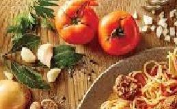

RECETAS PARA EL HOME OFFICE
NUESTRAS VERDURAS
Ravioles de ricota
Se recomiendan ravioles de ricota o de calabaza

Fideos con salsa de queso
La salsa puede usarse con cualquier tipo de fideos o ravioles.
Lasagna
Las capas pueden armarse con distintos ingredientes. Este plato tiene un tiempo de preparación más altos de todos.
Sorrentinos
Texto descriptivo y/o aclaratorio de la receta.
Fideos con brócoli y albahaca
Texto descriptivo y/o aclaratorio de la receta.
Pizza de fideos
Texto descriptivo y/o aclaratorio de la receta.
Orecciene con vegetales
Texto descriptivo y/o aclaratorio de la receta.
Canelones
Texto descriptivo y/o aclaratorio de la receta.
Futura receta
Texto descriptivo y/o aclaratorio de la receta.
Nuestras redes sociales